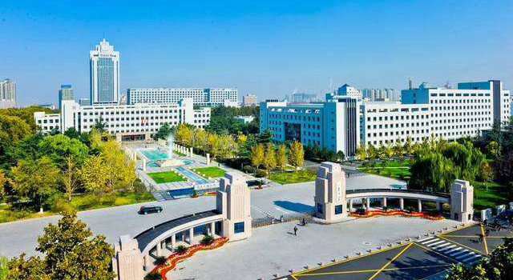
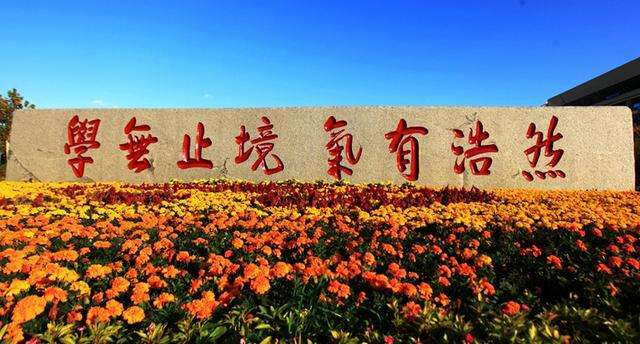

山东大学是一所历史悠久、学科齐全、学术实力雄厚、办学特色鲜明，在国内外具有重要影响的教育部直属重点综合性大学，是国家“211工程”和“985工程”重点建设的高水平大学之一。

山东大学是中国近代高等教育的起源性大学，其主体是1901年创办的山东大学堂，是继京师大学堂之后中国创办的第二所国立大学，也是中国第一所按章程办学的大学。从诞生起，学校先后历经了山东大学堂、国立青岛大学、国立山东大学、山东大学以及由原山东大学、山东医科大学、山东工业大学三校合并组建的新山东大学等几个历史发展时期。百余年间，山东大学秉承"为天下储人才"、"为国家图富强"的办学宗旨，践行"学无止境，气有浩然"的校训，踔厉奋发，薪火相传，形成了"崇实求新"的校风，为国家和社会培养了40余万各类人才，为国家和区域经济社会发展做出了重要贡献。

作为国家首批重点建设的“211工程”和“985工程”大学，近年来山东大学实现了跨越式发展，各项事业均达到了前所未有的高度。学校的综合水平和办学质量明显提升，国际影响力显著增强，目前有15个学科的学术影响力和贡献能力进入ESI世界排名前1%(名列国内高校第八位)，与30多个国家和地区的近170所学校签署了校际合作协议。